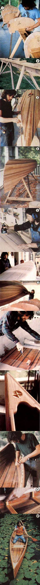

[1] Formers go on [2] the strongback. [3] The ""football"" base. [4] The untrimmed hull. [5] Sanding. [6] Laying the fiberglass cloth. [7] Flipping the boat. [8] Glassing the interior. [9] The bow deck. [10] Trimming the gunwales. [11] Installing the caned seats. [12] !!!